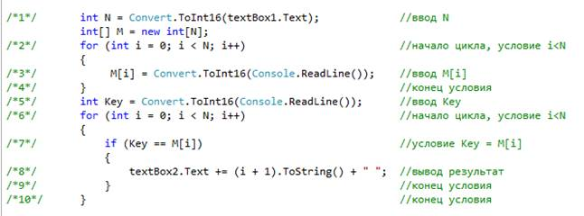
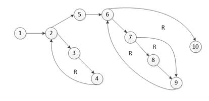

Лабораторная работа
Структурное тестирование
Цель: приобретение практических навыков тестирования приложений с помощью структурного тестирования, а также приобретение навыков разработки тестовых вариантов.
Структурное тестирование называют также тестированием по «маршрутам», так как в этом случае тестовые наборы формируют путем анализа маршрутов, предусмотренных алгоритмом. Под маршрутами при этом понимают последовательности операторов программы, которые выполняются при конкретном варианте исходных данных.
В основе структурного тестирования лежит концепция максимально полного тестирования всех маршрутов программы. Так, если алгоритм программы включает ветвление, то при одном наборе исходных данных может быть выполнена последовательность операторов, реализующая действия, которые предусматривает одна ветвь, а при втором - другая. Соответственно, для программы будут существовать маршруты, различающиеся выбранным при ветвлении вариантом.
Считают, что программа проверена полностью, если с помощью тестов удается осуществить выполнение программы по всем возможным маршрутам передач управления. Однако нетрудно видеть, что даже в программе среднего уровня сложности число неповторяющихся маршрутов может быть очень велико, и, следовательно, полное или исчерпывающее тестирование маршрутов, как правило, невозможно.
Общее задание
Разработать тестовые варианты для предложенного фрагмента кода.
Образец разработки тестовых вариантов
В качестве примера возьмем программу нахождения введенного с клавиатуры числа Key среди элементов массива M размерности N с возвращением его индекса I:

Структурное тестирование по способу тестирование базового пути основывается на построении и анализе путей потокового графа.
Построение потокового графа
Построение потокового графа на основе текста программы:
Нумеруются операторы текста, номера показаны в тексте программы. К операторам текста относятся, начала и окончания условий, а также операторы действий. После чего строится потоковый граф:

Определение цикломатической сложности
Определяем цикломатическую сложность V(G) потокового графа:
В начале, считается количество дуг и узлов. Каждая вершина графа является узлом, а линии соединяющие узлы – ребра. После чего считаем
12 дуг – 10 узлов+2=4;
Далее посчитаем количество предикатных узлов, то есть количество узлов, которые содержат условия. В данном случае это узлы 2 и 6, так как они содержат условие цикла, и 7, так как в нем находится условие ЕСЛИ. После нахождения всех узлов высчитаем по формуле:
f = количество предикатных узлов + 1.
3 предикатных узла + 1=4;
Определяем регионы потокового графа. Регион - замкнутая область потокового графа.
Потоковый граф имеет 4 региона: R1, R2, R3, R4;
Так как три различных способа определения цикломатической сложности показали одинаковое значение, значит существует четыре независимых пути для данного потокового графа.
Задание 1:
Самостоятельно откройте тестовое
приложение соответствующее вашему варианту и расчитайте цикломатическую мощность приложения. Вариант задания выбирается по последним двум цифрам в студенческом билете.
Тестовое приложение находится в папке "Programms".
Определение базового множества независимых линейных путей
Независимым называют любой путь, который вводит новый оператор обработки или условие. В терминах потокового графа независимый путь должен содержать дугу, не входящую в ранее определенные пути.
Путь начинается в начальном узле, а заканчивается в конечном узле графа. Независимые пути формируются в порядке от самого короткого к самому длинному.
Каждый новый путь включает новую дугу. Все независимые пути графа образуют базовое множество.
Определяем самый короткий путь. Из первого узла имеется переход только во второй узел. Из второго узла есть несколько путей в узел 3 и в узел 5. Так как узел 5 ближе к последнему узлу, то следует взять такие входные данные, при которых условие в узле 2 будет выполнено, так чтобы перейти в узел 5. Далее переход в узел 6, в котором аналогично узлу 2 подбираем входные параметры, при которых условие будет выполнено так, чтобы перейти в узел 10. На этом путь закончен.
Путь 1: 1-2-5-6-10;
Определяем следующий путь. Для этого пройдем до 6 узла, так же как в предыдущем пути. Далее пройдем к 7 узлу. В данном случае есть два пути, выберем самый длинный через 8 до 9. После чего вернемся в узел 6, а из него до 10.
Путь 2: 1-2-5-6-7-8-9-6-10;
Для определения следующего пути необходимо захватить путь через узлы 3 и 4, так как они не были в предыдущих путях. После завершения отрезка 1-2-3-4-2-5-6, перейдем к узлу 7, а из него перейдем сразу к узлу 9, так как эта дуга не будет захвачена последующим путем.
Путь 3: 1-2-3-4-2-5-6-7-9-6-10;
Далее находим самый длинный путь. В данном случае необходимо подобрать путь, который будет проходить через все узлы графа.
Путь 4: 1-2-3-4-2-5-6-7-8-9-6-10.
Задание 2:
Расчитайте базовое множество независимых линейных путей для вашего приложения.
Подготовка тестовых вариантов
На данном этапе подготавливаются тестовые варианты, которые обеспечат такие результаты условий, при которых будут пройдены все 4 пути, найденные в предыдущем этапе.
Тестовый вариант№1:
Для того чтобы условие цикла i<N было неверным, необходимо, чтобы переменная i, которая равна0, была больше, чем N, в данном случае подбираем самое наибольшее из целочисленных значений меньше 0. Так как оба цикла имеют одно и тоже условие, то оба цикла будут игнорироваться. Следовательно сравнение Key проходит в циклах, то следовательно, можно выбрать любое значение переменной Key, так как она не будет сравнена. Результат теста будет отрицательный, то есть I=0.
Идентификатор: N= -1, Key=любое;
Ожидаемый результат: I=0.
Тестовый вариант№2:
Для того чтобы условие цикла i<N было не верным, необходимо, чтобы переменная i, которая равна 0, была меньше или равна N. В данном случае подбираем самое наименьшее из целочисленных значений меньше 0. Так как оба цикла имеют одно и тоже условие, то оба цикла будут проигнорированы. Так как мы знаем значение M[i], то для того, чтобы тест прошел необходимо чтобы Key была равна M[i]. Но результат теста будет отрицательный, то есть I=0, так как второй цикл не пройдет, потому что значение N не даст пройти обоим циклам.
Идентификатор: N=0, Key=M[1];
Ожидаемый результат: I=0;
Тестовый вариант№3:
Для того чтобы условие цикла i<N было верным, необходимо, чтобы переменная i, которая равна 0, была меньше, чем N. В данном случае подбираем самое наименьшее из целочисленных значений меньше 0. Так как оба цикла имеют одно и тоже условие, то оба цикла будут пройдут. Так как мы знаем значение M[i], то для того, чтобы тест не прошел необходимо чтобы Key была не равна M[i]. Результат теста будет отрицательный, то есть I=0.
Идентификатор: N=1, Key;M[1];
Ожидаемый результат:I=0;
Тестовый вариант№4:
Для того чтобы условие цикла i<N было верным, необходимо, чтобы переменная i, которая равна 0, была меньше, чем N. В данном случае подбираем самое наименьшее из целочисленных значений меньше 0. Так как оба цикла имеют одно и тоже условие, то оба цикла будут пройдут. Так как мы знаем значение M[i], то для прохождения теста необходимо чтобы Key была равна M[i]. Результат теста будет положительный, то есть I=1.
Идентификатор: N=1, Key=M[1];
Ожидаемый результат: I=1;
Задание 3:
На основе базового множества независимых линейных путей составьте тестовые варианты для вашего приложения.
Контрольное задание
Самостоятельно откройте тестовое приложение соответствующее вашему варианту и создайте и проведите структурное тестирование приложения. Вариант задания выбирается по последним двум цифрам в студенческом билете. Полученные данные занесите в отчет о тестировании. Тестовое приложение находится в папке "Programms".